Third Row Seat Cover
Third Row Seat Cover ReplacementNOTE:
- Put on gloves to protect your hands.
- Take care not to scratch the interior trim.
- Take care not to tear the seams or damage the seat covers.
Seat-back Cover
1. Remove the third row seat.
2. Remove these items.
- Seat cushion
- Head restraint
3. Remove the screws securing the seat-back recline lever.
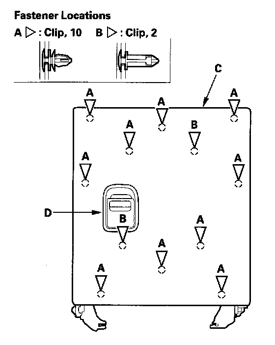
4. Detach the clips (A, B), and remove the back cover (C) from the frame, then turn the cover to pass the recline lever (D) through a hole in the cover.
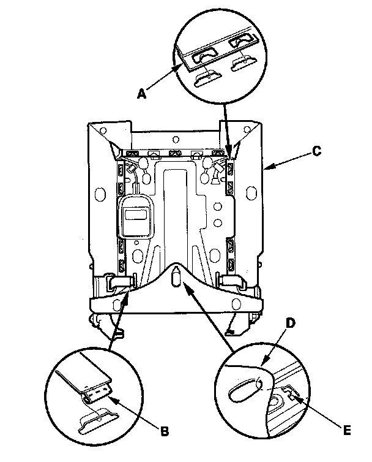
5. Release all of the hooks (A, B) from behind the seat-back (C). Unhook the edge of the seat-back cover (D) from the hook (E) of the seat-back frame.
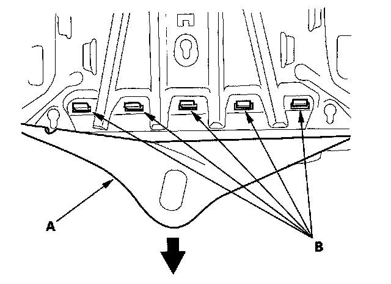
6. Pull the seat-back cover (A) back, and release the hooks (B).
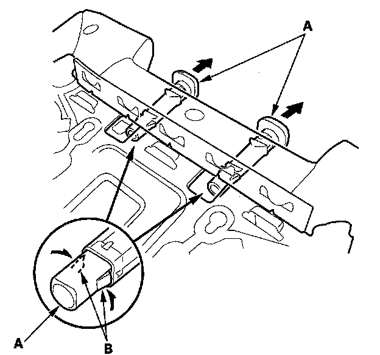
7. Pull out the head restraint guides (A) while pinching the tabs (B) on the end of the guides, and remove them.
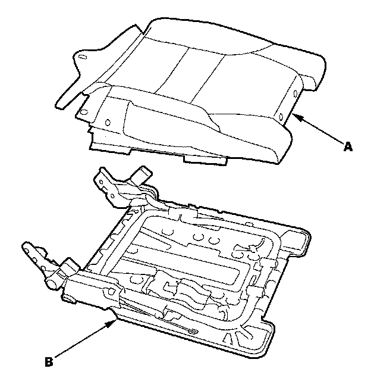
8. Remove the seat-back cover/pad (A) from the seat-back frame (B).
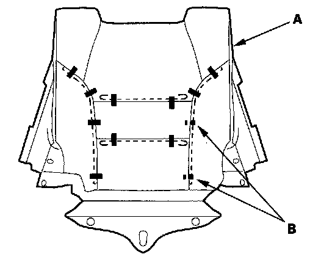
9. Pull back the edge of the seat-back cover (A) all the way around, then release all of the clips (B). Remove the seat-back cover.
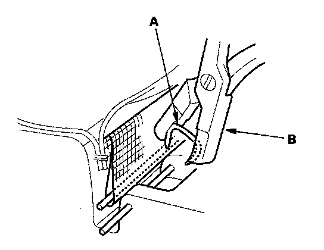
10. Install the seat-back cover in the reverse order of removal, and note these items:
- To prevent wrinkles when installing a seat-back cover, make sure the material is stretched evenly over the pad before securing the hook and clips.
- Replace any clips (A) you removed with new ones using commercially available upholstery ring pliers (B).
Seat Cushion Cover
1. Remove both front mounting bolts.
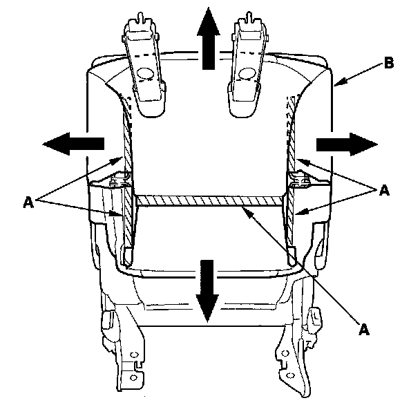
2. Release the hook strips (A) from under the seat cushion (B).
3. Remove the pivot bolt cover from both sides.
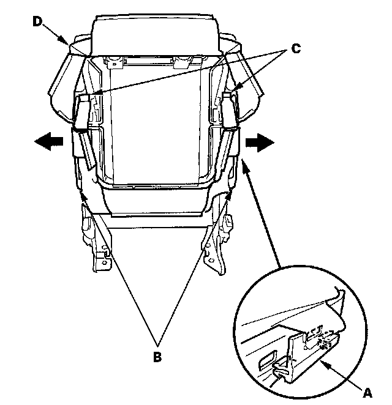
4. Detach the retainers (A) from both sides of the link (B), and release all of the hook strips (C) from under the seat cushion (D).
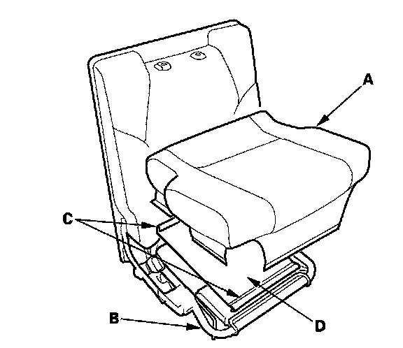
5. Remove the seat cushion cover/pad (A) from the seat cushion frame (B).
6. If necessary, release the hooks (C), then remove the suspension mat (D).
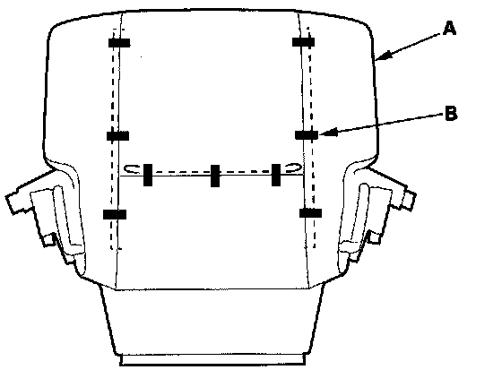
7. Pull back the edge of the seat cushion cover (A) all the way around, release all of the clips (B), under the right seat cushion cover, then remove the seat cushion cover.
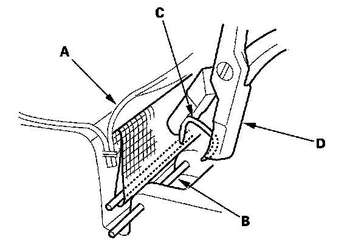
8. Install the seat cushion cover in the reverse order of removal, and note these items:
- To prevent wrinkles, make sure the material is stretched evenly over the pad before securing all the clips.
- Replace all of the clips fastening the seat-back cover (A) and pad wire (B) with new ones (C) using commercially available upholstery ring pliers (D).